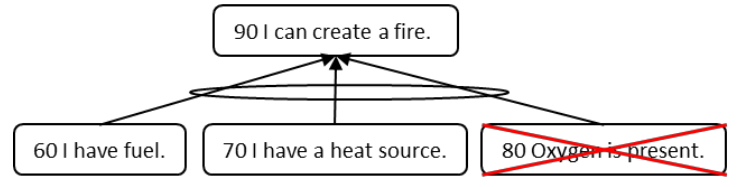

кислород (oxygen) - Предположение, которое обычно не документируется на диаграмме, основанной на достаточности мыслительных процессов, потому что всем известно, что оно существует и везде принимается как элемент реальности.
Иллюстрация: Вербализуется следующая логическая схема:
Кислород также должен присутствовать, но кислород есть везде, где мы находимся, поэтому мы обычно предполагаем, что кислород доступен, и нет необходимости документировать его на нашей логической диаграмме, основанной на достаточности.

См.: предположение, жизненный факт, логика, основанная на достаточности, мыслительные процессы.
#мп
Синоним: oxygen